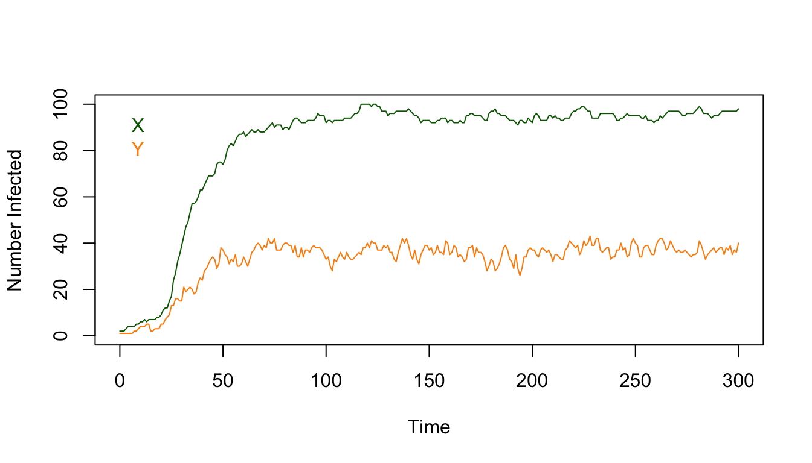
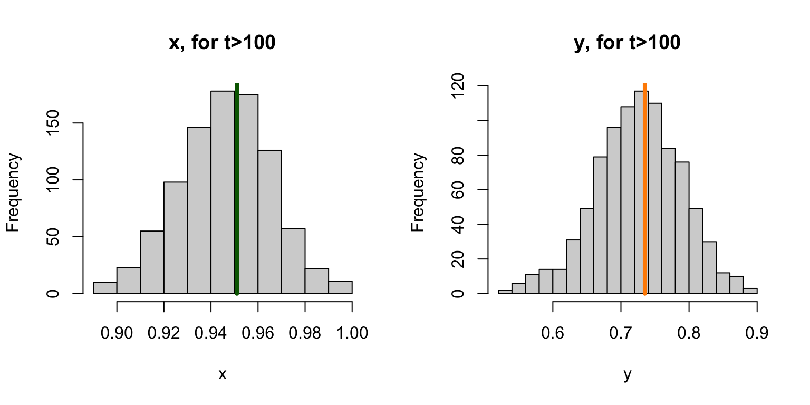
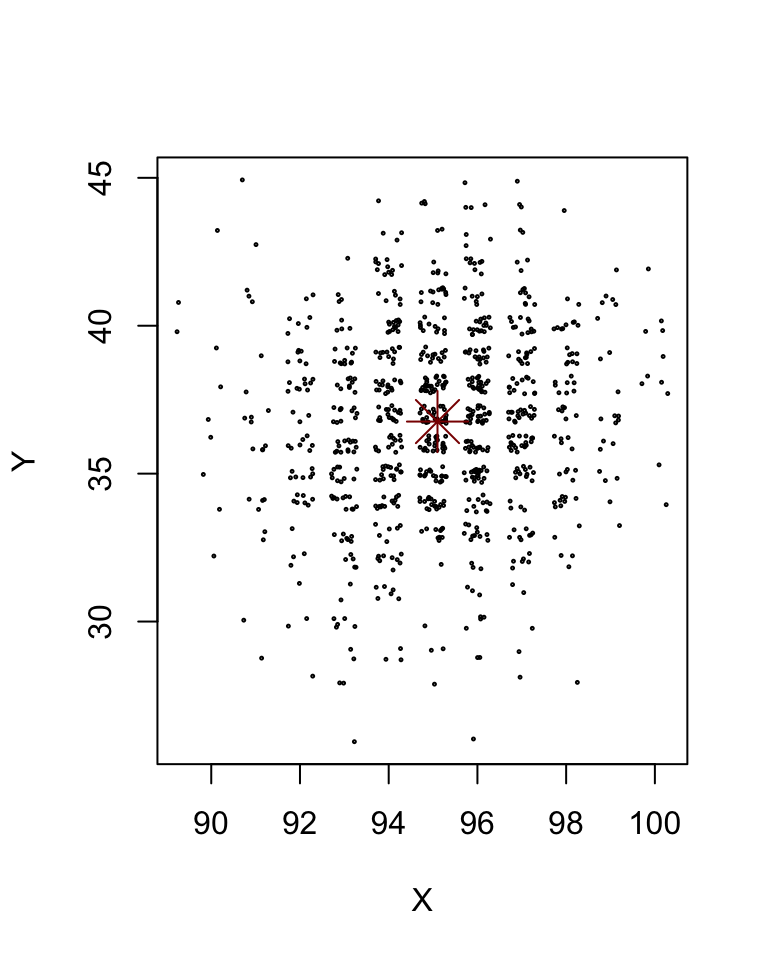

2.2 Stochastic, Discrete Time
Demographic stochasticity.
If we followed individuals in a population that followed the simple rules described in Equation (2.1) and Equation (2.2), we would like to be able to understand how they are connected to the deterministic equations we developed in Section-2.1. Setting aside the problems that get introduced by sampling populations for the moment – we will pretend we’re omniscient – we would find random changes occurring:
individual humans would be switching states over time at random: from infected to uninfected and back;
individual mosquitoes would be dying at random: infected mosquitoes would get replaced by uninfected mosquitoes, and uninfected mosquitoes would be blood feeding and getting infected if they blood fed on an infected (and infectious) human.
The world really has a random component to it. It is not deterministic but stochastic.
In the deterministic models that we called ross_dts_1 and ross_dts_2, the values of each variable at each point in time were specified exactly by the equations, the rules for updating the variables each day. The values of the variables were proportions, which is related to the metric prevalence. In these models, the variables asymptotically approach a steady state. Once at the steady state, the fractions infected would never change.
In models with stochasticity, we could use the same exact rules to specify what is expected to happen, but we must draw a random number to determine the values of the variables. To do this, we want to be working with the counting numbers – the number of humans in a population and the number of those humans who are infected; and the number of mosquitoes in a population, and the number of those mosquitoes who are infected. The variability in the values of our variables over time due to the random component of parasite infection dynamics – also called the parasite demographics – would be called demographic stochasticity. The model has some things in common with the ones we described above: the model doesn’t have a steady state, but there is something like a steady state that the variables fluctuate around. We’ll call it an attractor. The variables are always pulled towards the attractor, but the values of the variables are constantly changing around it.
In a real study, we can’t pretend to be omniscient, but we will discuss that later.
Parameters – We can use the same parameters as before, but there are two new parameters:
\(M\) is the number of mosquitoes: \(M\) is a counting number
\(H\) is the number of humans; \(H\) is a counting number
Otherwise we use the same parameters as we did before.
# The parameters, as a list
ross_sdts_par = list(
M = 50, # The number of mosquitoes
H = 100, # The number of humans
s = 1/200, # The fraction of infections that clear each day
u = 1/12, # The fraction of mosquitoes that die each day
a = 1/4 # The fraction of mosquitoes that blood feed on a human each day
)
ross_sdts_par$m = with(ross_sdts_par, M/H)Variables
In the stochastic model, our variables are counting numbers, not fractions:
\(Y \leq M\) is the number of infected mosquitoes: \(Y\) is a counting number
\(X \leq H\) is the number of infected humans: \(X\) is a counting number
It is easy enough to define prevalence:
\(x = X/H\) is malaria prevalence in humans; the fraction of humans infected
\(y = Y/M\) is malaria prevalence in mosquitoes; the fraction of mosquitoes infected
Equations
Now we have got to describe a stochastic process. Each individual changes state with some probability. Each one is a Bernoulli random variable, and the appropriate proability mass function is the binomial model. In R, we use the built-in function rbinom(1, N, p) to draw one random variable on \(N\) individuals that remains in the same state with probability \(p\).
In each step, there are four possible changes, depending on the states:
\(X\) - if humans are infected today, they might lose infection. An infection is lost with probability \(s\), so the fraction that remain infected is \(1-s.\) The number that remains infected is
rbinom(1, X, 1-s).\(H-X\) - if humans are uninfected today, they might get infected. The probability of getting infected is called the daily attack rate. The expected number of infected bites is \(aY/H\), and if we use the Poisson to model the distribution of bites per person, then the attack rate is \(1-e^{-aY/H}\). The number that remains ends up infected is
rbinom(1, H-X, ar).\(Y\) - if mosquitoes are infected today, they might die. The fraction dying is \(u\), so the number of surviving infected mosquitoes is
rbinom(1, X, 1-s).\(H-Y\) - if mosquitoes are uninfected today, they might get infected. To get infected, a mosquito must blood feed on an infected human, so the fraction getting infected is \(aX/H\). The number that gets infected is
rbinom(1, H-Y, a X/H).
The rule for updating the number of infected humans and mosquitoes is thus:
\[\begin{equation} \begin{array}{rl} X_{t+1} &= \mbox{Binom}(X, 1-s) + \mbox{Binom}(H-X, 1-e^{-a Y/H}) \\ Y_{t+1} &= \mbox{Binom}(Y, 1-u) + \mbox{Binom}(M-Y, aX/H) \\ \end{array} \end{equation}\]
The following implements this as R code:
# XY - a vector of the form c(t, X, Y)
# params - the parameters, as a list
ross_sdts = function(XY, params){
with(as.list(XY),
with(params,{
ar = 1 - exp(-a*Y/H)
Xn = rbinom(1, X, 1-s) + rbinom(1, H-X, ar)
Yn = rbinom(1, Y, 1-u) + rbinom(1, M-Y, a*X/H)
t=t+1
return(c(t=t, X=Xn, Y=Yn))
}))}We write a wrapper that solves it:
# INPUTS
# pars - the parameters, as a list
# X0 - the initial number of infected humans
# Y0 - the initial number of infected mosquitoes
# t0 - the initial value of t
# tmax - the last value of t
#
# OUTPUTS
# the values of the variables over time, as a list
sim_ross_sdts = function(pars, X0=2, Y0 = 1, t0=0, tmax=100){
XY = c(t=t0, X=X0, Y=Y0)
XY_t = XY
for(t in (t0+1):tmax){
XY = ross_sdts(XY, pars)
XY_t = rbind(XY_t, XY)
}
X=XY_t[,2]
Y=XY_t[,3]
x=X/pars$H
y=Y/pars$M
return(list(time=XY_t[,1], x=x, y=y, X=X, Y=Y, last = XY))
}We can write another function that plots the equations (i.e. that iteratively computes and stores the values) over some time interval:
# INPUTS
# XY_t - a list with elements named x, y, and time
# type - plot type: "l" or "p" or "b"
# lty - lty
# add - if TRUE, add to existing plot
plot_XY = function(XY_t, type="l", lty=1, add= FALSE){with(XY_t,{
if(add == FALSE)
plot(time, X, type = "n", ylim = range(0, X, Y), ylab = "Number Infected", xlab = "Time")
lines(time, X, type=type, lty=lty, col="darkgreen", pch =15)
lines(time, Y, type=type, lty=lty, col="darkorange", pch =19)
text(0, 0.9*max(X,Y), "X", col = "darkgreen", pos=4)
text(0, 0.8*max(X,Y), "Y", col = "darkorange", pos=4)
})}A useful feature of R is the ability to replicate any particular sequence of random numbers by setting a seed. This also makes it easy to write a book knowing what the random number sequence will be.

Once we’re close to the steady state, some time after the first 100 days, we can compute the mean:
Xdist= with(XYt, X[-c(1:100)])
Ydist= with(XYt, Y[-c(1:100)])
mX = mean(Xdist)
mY = mean(Ydist)
c(X=mX, Y=mY)## X Y
## 95.10945 36.26866This can be visualized as a histogram:
par(mfrow=c(1,2))
hist(Xdist, xlab = "x", main = "X, for t>100")
segments(mX, 0, mX, 250, lwd=4, col = "darkgreen")
hist(Ydist, 15, xlab = "y", main = "Y, for t>100")
segments(mY, 0, mY, 200, lwd=4, col = "darkorange")
Since we can compute prevalence, we can plot it out:

xdist= with(XYt, x[-c(1:100)])
ydist= with(XYt, y[-c(1:100)])
mx = mean(xdist)
my = mean(ydist)
c(x=mx, y=my) ## x y
## 0.9510945 0.7253731par(mfrow=c(1,2))
hist(xdist, xlab = "x", main = "x, for t>100")
segments(mx, 0, mx, 250, lwd=4, col = "darkgreen")
hist(ydist, 15, xlab = "y", main = "y, for t>100")
segments(my, 0, my, 200, lwd=4, col = "darkorange")
The system still tends towards a point – we’ll call it an attractor and not a steady state. The values of \(X\) and \(Y\) (or of \(x\) and \(y\)) fluctuate around that steady state. Since the counting number values get repeated, we can illustrate what the cloud looks like by jittering the locations of the points:
with(XYt,{
ix = which(time>100)
plot(jitter(X[ix]), jitter(Y[ix]), xlab = "X", ylab = "Y")
})
points(mX, mY, col = "darkred", pch = 8, cex =3)
We note that mean prevalence is very close to the steady state of the deterministic system with the same parameter values:
## [1] 0.004686644 -0.014157539An important feature of stochastic systems is that it is possible for the parasite to randomly fade out, if at any time \(X=Y=0.\) This is something we’d like to take a bit more time computing.